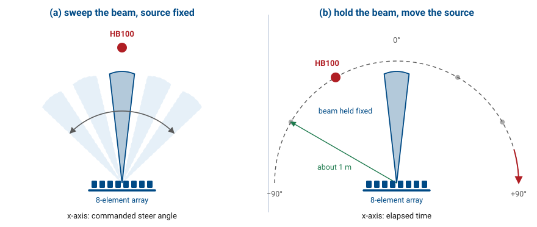
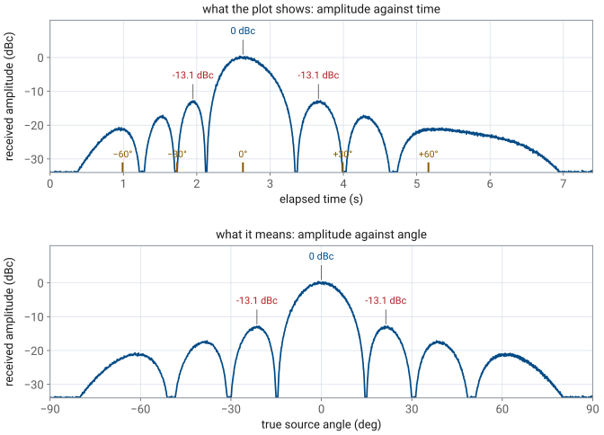
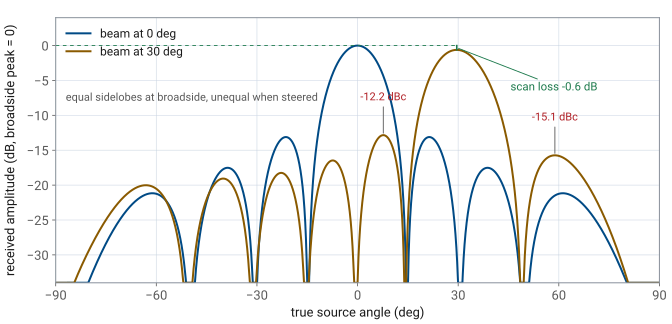
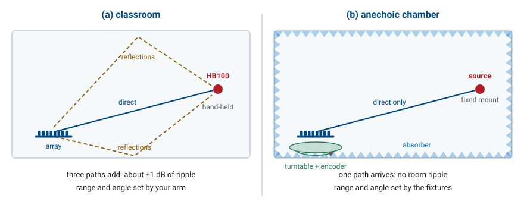

L23 - Antenna Pattern Lab#
Antenna Pattern Lab
Today the beam holds still and the source moves.
Lesson 23 Lab · Antennas, Phased Arrays, and Radar Systems · Dr. Neil Rogers
Learning Objectives
- I can measure an antenna pattern by rotating a source around the array with the beam held fixed.
- I can compare the mechanically measured pattern against the electrically swept trace and account for the differences.
- I can extract sidelobe amplitudes from a measured pattern trace.
- I can state the limits of a hand-rotation measurement and what an anechoic chamber provides.
Lesson 22 separated the array factor from the pattern the array radiates, and predicted three places where the two part company: the peak sags as \(\cos\theta_0\) when you steer, the sidelobes on either side of a steered beam stop matching each other, and nothing comes out the back. Today you measure all three. The measurement uses a different technique from every PHASER lab so far — the beam stays where you put it and the source moves — and by the end of the period you will have a pattern trace with real physical angles on it, plus the limits of a hand-held measurement.
Part 1: Two ways to trace a pattern
There are two ways to get a pattern out of an array, and they are not the same measurement.
The first way is the one you have used in every lab since Lesson 19. Put a source somewhere and leave it there, then sweep the beam electronically past it, recording received power at each commanded steer angle. That is what the Rectangular tab’s Start button does. The trace it paints is close to the array factor, plotted against the angle you asked the beamformer for.
The second way is what an antenna range does
The second way is what an antenna range does. Hold the beam fixed and carry the source around the array on an arc, recording received power as it goes. The trace this paints is the full radiated pattern — element factor and array factor together — plotted against a physical angle you can point at in the room. You have done this once before: the midterm project measured a single antenna’s pattern by moving a source around it, and today applies the same idea to a beam you are steering electronically.
Two ways to trace a pattern

The difference matters because the two traces answer different questions.
They are not the same measurement
Sweep the beam |
Move the source |
|
|---|---|---|
x-axis |
commanded steer angle |
elapsed time (angle is where your hand was) |
What is measured |
mostly the array factor |
element factor \(\times\) array factor |
Element factor |
fixed, so it cancels out |
included, and it shades the trace |
They are not the same measurement, continued
Sweep the beam |
Move the source |
|
|---|---|---|
Angle accuracy |
set by the phase LSB, \(2.8125^\circ\) |
set by how steadily you walk |
Behind the array |
never visited |
visibly empty |
Sweeping the beam holds the source at one physical angle
Sweeping the beam holds the source at one physical angle, so the element factor contributes the same constant to every point on the trace and drops out of the shape. Moving the source changes the physical angle at every instant, so the element pattern rides on top of the array factor exactly as Lesson 22 described.
What Lesson 22 says you will see
Three differences, all of them measurable this period. Scan loss: with the beam at \(30^\circ\) the peak reads about \(0.6\ \text{dB}\) below the broadside peak, because the projected aperture shrinks as \(\cos\theta_0\). Sidelobe asymmetry: the first sidelobe on the inside of a steered beam sits higher than the one on the outside, because the element factor falls off faster at large angles. No back radiation: the trace dies away toward \(\pm 90^\circ\) and there is nothing behind the array, because the patch elements radiate into the forward hemisphere only.
Part 2: Equipment and setup
Per bench:
ADALM-PHASER (CN0566) with its ADALM-Pluto, powered and on the network.
HB100 Doppler module on a handheld mount, with a fresh battery.
A camera tripod or a length of string cut to \(1\ \text{m}\), used as a radius gauge.
A laptop with a browser pointed at
http://phaser.local:8080.Masking tape to mark the arc on the floor.
Bring the array up the way you always do. Open the GUI, run Calibrate from the Configuration section, and confirm on the Rectangular tab that a broadside sweep peaks near \(0^\circ\) with a clean pair of first sidelobes. If it does not, fix that before going further, because everything below assumes a calibrated array.
Lab Preset 7 — Antenna Pattern
Then load Lab Preset 7 (Antenna Pattern) from the Lab Presets section. The preset does one thing you have not seen before: it puts the GUI in Signal vs Time mode on the Tracking tab. In this mode the plot streams received amplitude against wall-clock time rather than against steering angle. The beamformer stops sweeping and holds whatever Steer Angle you have applied, so the only thing that changes the received amplitude is where the source is.
Mark the arc before you touch the hardware
Mark the arc before you touch the hardware. Measure \(1\ \text{m}\) from the face of the array, tape a mark on the floor at \(-90^\circ\), \(0^\circ\), and \(+90^\circ\), and add marks every \(30^\circ\) if you have time. Lesson 22 put the far-field boundary of this aperture at \(0.66\ \text{m}\), so a \(1\ \text{m}\) radius is far enough out that the pattern has settled, and walking it consistently is what makes the amplitudes comparable from run to run.
No hardware? Work the electrical sweep instead
Note
No hardware? This procedure has no simulation equivalent. The simulator’s
target is fixed at boresight and cannot be moved, so there is no way to reproduce
a walk around the array in --sim. Work the electrical sweep on the Rectangular
tab instead, and use the widget in Part 3 to see what the mechanical trace would
have looked like.
Part 3: Procedure
Step 1 — the broadside run
Set Steer Angle to \(0\) in the Beam Steering section and press Apply. Stand at the \(-90^\circ\) mark holding the HB100 aimed at the array, start the Tracking plot, and walk smoothly around the arc to \(+90^\circ\), keeping the module pointed at the array the whole way and keeping the radius at \(1\ \text{m}\). Take about seven or eight seconds for the walk. The amplitude trace paints the pattern as you go.
Practice the walk before recording
Practice the walk before recording. A walk that is too fast crams the whole pattern into the left quarter of the plot, and one that is too slow runs off the right edge before you reach \(+90^\circ\). Practice until one full rotation spans the plot with the main lobe somewhere near the middle, then record that run.
The trace paints as you walk
The widget below runs the same walk in simulation. Choose a steer angle and a rotation speed profile, then watch the trace paint as the source moves around the arc. Run it once with the uniform profile and once with the hand-like profile, and compare the two pill readouts: the lobe spacing changes completely and the lobe amplitudes do not move at all. That is the result the rest of this lab depends on.
Step 2 — read the lobe structure
Freeze the trace and read it. The amplitudes are trustworthy and the angles are not, because the x-axis is time and your hand speed was not uniform. A stretch of the walk where you slowed down spreads a lobe wider on the plot; a stretch where you hurried squeezes one narrower. Neither changes how tall the lobe is.
Record three numbers as amplitudes relative to the main-lobe peak, in dBc: the main lobe itself, which is \(0\) dBc by definition, and the first sidelobe on each side of it. The uniform 8-element array puts its first sidelobes at \(-13\) dBc, and a hand-walked trace in a classroom should land within a decibel or two of that.
Amplitudes survive, angles do not

Step 3 — steer the beam and walk it again
Set Steer Angle to \(30\) and press Apply. Walk the same arc at the same radius and record a second trace. Three things change.
The main lobe now appears when you cross about \(30^\circ\) instead of at boresight, which is the most direct confirmation of beam steering you will get all semester: the beam is pointing where the phases say it should, and you found it by walking into it.
The peak reads lower — scan loss
The peak reads lower than the broadside run. Theory says \(0.6\ \text{dB}\) lower. Your hand wobble is worth roughly \(\pm 0.5\ \text{dB}\) on its own, so a single pair of runs will not resolve a \(0.6\ \text{dB}\) difference. Record what you measure, state the uncertainty next to it, and say whether the two runs are distinguishable. Averaging three runs at each steer angle tightens this enough to be worth the extra five minutes.
The pattern is no longer symmetric
The pattern is no longer symmetric. The first sidelobe on the inside of the beam, near \(+8^\circ\), sits about \(-12.2\) dBc; the one on the outside, near \(+59^\circ\), sits about \(-15.2\) dBc. The array factor alone would have made them equal, and the element factor is what pulls the outer one down.
Broadside and steered patterns compared

Step 4 — compare against an electrical sweep
Put the HB100 back on the \(0^\circ\) mark and leave it there. Set Steer Angle back to \(0\), switch to the Rectangular tab, and press Start to run a normal beam sweep. Do not move the source for this one.
Put the two traces side by side. The lobe amplitudes agree: the first sidelobes measure \(-11\) to \(-13\) dBc on the sweep, the same window your walk produced. The x-axes do not mean the same thing. The sweep’s axis is the commanded steer angle, sampled on a grid set by the \(2.8125^\circ\) phase LSB, and it is calibrated because the beamformer knows exactly what it commanded. Your walk’s axis is time, and it is calibrated by nothing.
Worked example — reading dBc off a raw trace
Worked example — reading dBc off a raw trace
A Tracking-tab run gives peak amplitudes of \(-18.4\) dBFS for the main lobe, \(-31.2\) dBFS for the left first sidelobe, and \(-29.9\) dBFS for the right first sidelobe. The full-scale reference cancels when you take the ratio, so subtract:
Worked example — reading dBc off a raw trace (cont.)
Worked example — reading dBc off a raw trace (cont.)
Both straddle the \(-13\) dBc value for a uniform 8-element array, and the \(1.3\ \text{dB}\) spread between them is about what a classroom’s multipath ripple produces. A pair reading \(-12.8\) and \(-11.5\) dBc is a uniform illumination measured in a room. A pair reading \(-6\) and \(-7\) dBc would not be, and would send you back to Calibrate and to the element gain sliders.
Expectation table for the lab report
Expectation table for the lab report:
Quantity |
Calculated |
Mechanical (measured) |
Electrical sweep (measured) |
|---|---|---|---|
First sidelobe, left |
\(-13.1\) dBc |
\(-11\) to \(-13\) dBc |
|
First sidelobe, right |
\(-13.1\) dBc |
\(-11\) to \(-13\) dBc |
|
Peak, beam at \(30^\circ\) |
\(-0.6\) dB |
\(-0.6\) dB |
Expectation table, continued
Quantity |
Calculated |
Mechanical (measured) |
Electrical sweep (measured) |
|---|---|---|---|
Inner sidelobe, beam at \(30^\circ\) |
\(-12.2\) dBc |
below the sweep’s floor |
|
Outer sidelobe, beam at \(30^\circ\) |
\(-15.2\) dBc |
below the sweep’s floor |
Where the calculated $-13.1$ dBc comes from
The calculated \(-13.1\) dBc is the \(-12.8\) dB array-factor sidelobe plus about \(0.3\) dB of element-pattern roll-off at the \(\pm 22^\circ\) where those sidelobes sit. The sweep’s noise floor sits about \(23\ \text{dB}\) below the peak, which is why two of the steered entries have nothing to compare against on that side of the table.
Part 4: What the hand measurement cannot do
Four things separate what you just did from a pattern measured on an antenna range, and you have an artifact of each one sitting in your data.

Angle calibration
Your x-axis is time, and converting it to angle requires assuming a constant walking speed you did not have — that is why the lobes moved between your uniform and hand-like runs in the widget. A range mounts the antenna on a turntable with a shaft encoder, so every recorded sample carries the angle it was taken at to a fraction of a degree.
Amplitude stability
Your radius varied by whatever your arm did, and received power goes as \(1/r^2\), so a \(10\ \text{cm}\) error at \(1\ \text{m}\) is worth about \(0.8\ \text{dB}\) — comparable to the scan loss you were trying to measure. A range bolts the source at a fixed distance and never moves it.
Reflection control
The direct path is not the only path from the HB100 to the array. Reflections off the floor, the ceiling, and the whiteboard arrive too, and they add to the direct signal in and out of phase as you walk, which is the source of the \(\pm 1\ \text{dB}\) ripple you saw riding on the trace. An anechoic chamber lines every surface with absorber so only the direct path survives.
Guaranteed far field
You taped the arc at \(1\ \text{m}\) against Lesson 22’s \(0.66\ \text{m}\) criterion, held to whatever tolerance a hand-held source allows. A range fixes the separation once, documents it, and the far-field condition is then a documented property of the facility rather than of the operator.
Part 5: Deliverables
Submit the following at the start of the next period.
An annotated trace. One screenshot of your best broadside run, with the main lobe and both first sidelobes labeled with their dBc values.
The amplitude comparison table. Three lobes — main lobe, left first sidelobe, right first sidelobe — with a mechanical column, an electrical-sweep column, and a calculated column filled from theory. State the difference between the mechanical and electrical readings for each lobe.
Deliverables, continued
Two written answers, three or four sentences each:
Why do the lobe amplitudes survive a sloppy rotation while the lobe angles do not? Refer to what the time axis does and does not record.
Which of the four artifacts in Part 4 does an anechoic chamber remove, and which of them would still be present in a chamber measurement?
Lab sheet
The lab sheet is the turn-in document for all of it: Lab sheet (PDF).
Summary — the two measurement methods
Idea |
What it is |
Number to remember |
|---|---|---|
Beam sweep |
beam swept past a fixed source |
x-axis is commanded steer angle |
Mechanical cut |
source walked around a fixed beam |
x-axis is time, angle is physical |
First sidelobe, \(N = 8\) uniform |
set by the aperture illumination |
\(-13\) dBc, measured \(-11\) to \(-13\) |
Summary — steering effects and geometry
Idea |
What it is |
Number to remember |
|---|---|---|
Scan loss |
projected aperture falls off as \(\cos\theta_0\) |
\(-0.6\) dB at \(30^\circ\) |
Sidelobe asymmetry |
element factor shades the outer lobe |
\(-12.2\) vs \(-15.2\) dBc at \(30^\circ\) |
Far-field radius |
\(r \ge 2D^2/\lambda\) from Lesson 22 |
\(0.66\ \text{m}\); walk the arc at \(1\ \text{m}\) |
Summary — measurement uncertainty
Idea |
What it is |
Number to remember |
|---|---|---|
Classroom multipath |
direct path plus room reflections |
about \(\pm 1\ \text{dB}\) of ripple |
Hand wobble |
radius and speed both vary |
about \(\pm 0.5\ \text{dB}\) on the peak |
Practice
Where this is going
You now have a measured \(-13\) dBc sitting in your lab notebook, and so far it has been a fact about uniform illumination rather than a choice. Lesson 24 turns it into a design variable. Feeding the eight elements unequally — more power in the middle, less at the edges — pushes the sidelobes down, and the Element Gains sliders you have been leaving at 100% are how you do it on this hardware.
Where this is going, continued
A taper that lowers the first sidelobes by \(10\ \text{dB}\) widens the main lobe and lowers the peak gain, and Lesson 24 derives exactly how much of each. Before the next period, look back at your broadside trace and decide how much beamwidth you would give up to put those first sidelobes at \(-25\) dBc, then check your guess against the numbers.